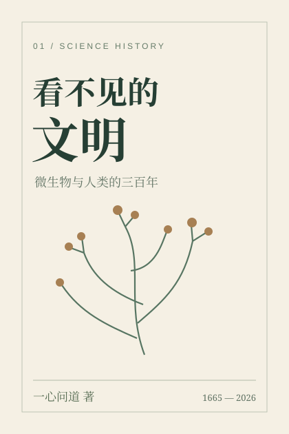

01科学历史小说Science-history novel
看不见的文明The Invisible Civilization
微生物与人类的三百年Microorganisms and three centuries of humanity
从显微镜下的霉菌，到城市、病房与实验室。书写微生物科学史，也书写普通人的生活。Three centuries of microbiology through ordinary lives, from early microscopy to cities, hospitals and laboratories.